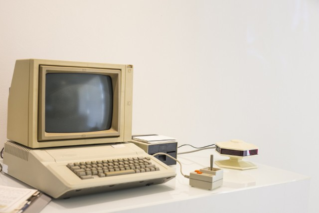
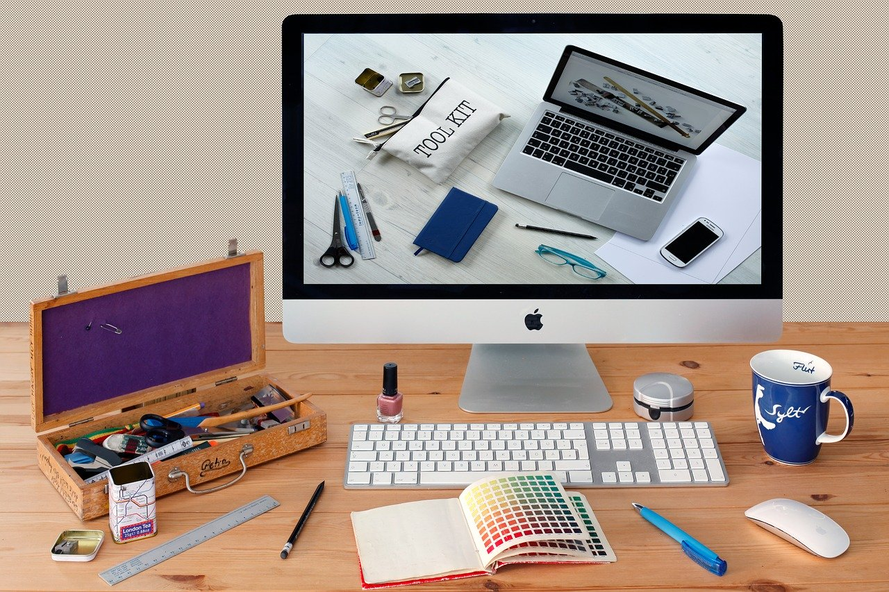
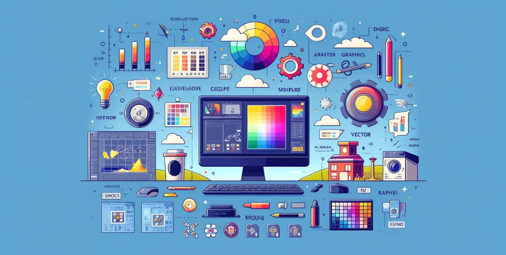

Kompendium Grafiki Komputerowej
Witaj w kompendium wiedzy o grafice komputerowej. Znajdziesz tutaj informacje o historii, technikach, narzędziach oraz inspiracjach ze świata grafiki.
Rozdzielczość
Rozdzielczość ekranu określa liczbę pikseli, które są wyświetlane na ekranie urządzenia, takiego jak monitor komputerowy, telewizor czy smartfon.
Najpopularniejsze rozdzielczości to:
- HD (720p) – 1280 x 720 pikseli
- Full HD (1080p) – 1920 x 1080 pikseli
- Ultra HD (4K) – 3840 x 2160 pikseli
- 8K – 7680 x 4320 pikseli
Wyższa rozdzielczość oznacza większą liczbę pikseli, co pozwala na wyświetlanie bardziej szczegółowych obrazów.
Rozdzielczość obrazu (zdjęcia)
Rozdzielczość obrazu odnosi się do liczby pikseli, które tworzą zdjęcie. Może być wyrażona w dwóch wymiarach: szerokości i wysokości obrazu, np. 6000 x 4000 pikseli.
Im wyższa rozdzielczość zdjęcia, tym większe jest jego fizyczne rozmiarowanie (np. w druku) oraz możliwość uzyskania wyraźnych szczegółów przy powiększaniu.
 Wróć na góręTechniki Grafiki
Techniki grafiki komputerowej obejmują tworzenie obrazów za pomocą programów graficznych. Grafika komputerowa może być dwuwymiarowa (2D) lub trójwymiarowa (3D). Podział grafiki komputerowej Grafika rastrowa i wektorowa Grafika dwuwymiarowa, trójwymiarowa i ruchomą Grafika teoretyczna i praktyczna Techniki animacji komputerowej Animacja klatkowa, Animacja szkieletowa (rigging), Symulacja fizyczna. Formaty plików graficznych PNG (Portable Network Graphics), XCF (eXperimental Computing Facility), PSD (Photoshop Document), SVG (Scalable Vector Graphics), TIFF (Tagged Image File Format). Narzędzia graficzne Adobe Photoshop, Illustrator. Umiejętności grafika komputerowego Zrozumienie zasad kompozycji i teorii kolorów, Kreatywność, Umiejętność pracy z detalami. Zawód technika grafiki i poligrafii cyfrowej Tworzenie i przygotowywanie materiałów graficznych do drukowania, Obsługa programów graficznych, Wykonywanie i publikowanie projektów multimedialnych i stron internetowych.
 Wróć na górę
Wróć na górę
Narzędzia Graficzne
Więcej informacji Narzędzia graficzne komputerowe to programy, które pozwalają tworzyć i edytować grafiki. Popularne programy graficzne Adobe Photoshop: Jeden z najpopularniejszych programów do projektowania graficznego CorelDRAW: Program do edycji grafiki wektorowej Photo-Paint: Program do edycji grafiki rastrowej Figma: Narzędzie do prototypowania, które pozwala na szybkie tworzenie, prezentowanie i edycję prototypów Sketch: Aplikacja do prototypowania, popularna wśród użytkowników Apple Adobe XD: Narzędzie do prototypowania, które synchronizuje pracę z Illustratorem Canva: Narzędzie do tworzenia grafik i obróbki zdjęć Pixlr: Narzędzie do obróbki zdjęć Kizoa: Narzędzie do tworzenia grafik i obróbki zdjęć Darmowe programy graficzne PhotoScape X, Photopea, Canva. Narzędzia do prototypowania Figma, Sketch, Adobe XD. Narzędzia do tworzenia grafik w social media Canva, BeFunky, Pablo.
 Wróć na góręInspiracje Graficzne
Inspiracji do grafiki komputerowej można szukać w trendach, na stronach z portfolio grafików oraz w mediach społecznościowych. Trendy Lata 90-te Geometryczne kształty, piksele, dwuwymiarowa grafika, ekstrawaganckie kolory, ziarniste tekstury Mistycyzm i eko modernizm Delikatne i lekkie grafiki z cienkimi liniami, zaokrąglonymi kształtami, spokojnymi kolorami Jaskrawe kolory Mocne kontrastujące połączenia kolorystyczne, które przyciągają oko odbiorców Nostalgia Nawiązania do mody lat sześćdziesiątych i siedemdziesiątych Strony z portfolio grafików Behance Platforma, gdzie profesjonaliści z branży kreatywnej udostępniają swoje portfolio Dribbble Platforma z projektami graficznymi, ale o bardziej selektywnym gronie użytkowników Media społecznościowe Pinterest Portal, który posiada przeogromną bazę materiałów z różnych dziedzin życia
 Wróć na górę